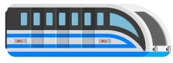

SUBWAY Line2
지하철역을 선택해주세요
시청
을지로입구
을지로3가
을지로4가
동대문역사문화공원
신당
상왕십리
왕십리
한양대
뚝섬
성수
건대입구
구의
강변
잠실나루
잠실
신천
종합운동장
삼성
선릉
역삼
강남
교대
서초
방배
사당
낙성대
서울대입구
봉천
신림
신대방
구로디지털단지
대림
신도림
문래
영등포구청
당산
합정
홍대입구
신촌
이대
아현
충정로
내선

외선